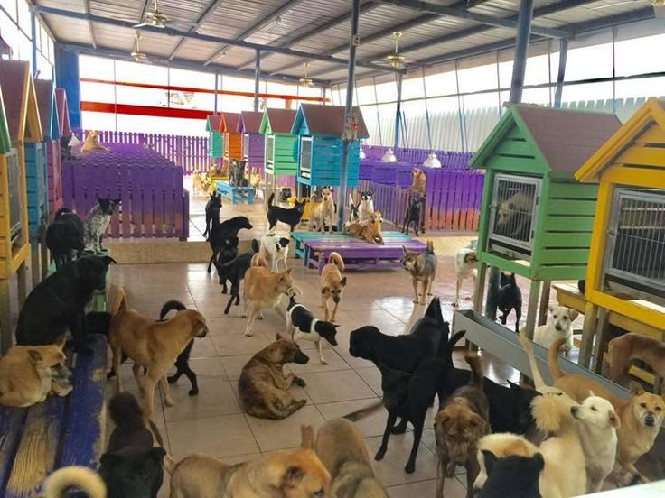
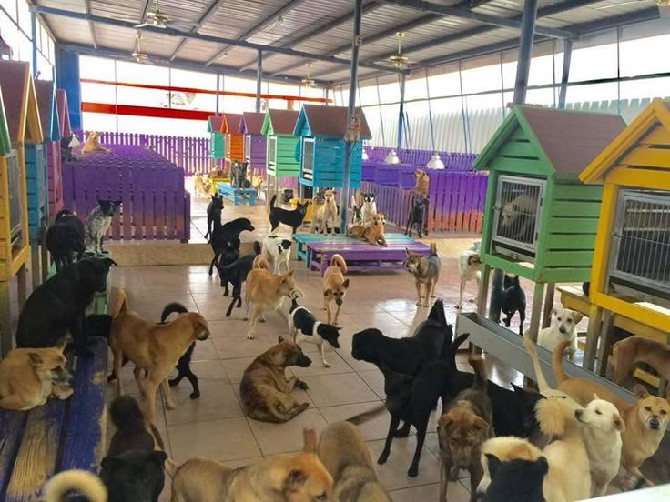

Nuestra Historia
Desde el año 2010 rescatamos y protegemos animales en situación de abandono. Les brindamos amor, cuidados y un hogar temporal hasta encontrar una familia definitiva.
Desde el año 2010 rescatamos y protegemos animales en situación de abandono. Les brindamos amor, cuidados y un hogar temporal hasta encontrar una familia definitiva.
Buscamos reducir el abandono animal y promover la tenencia responsable. Nuestra visión es lograr un mundo donde todos los animales sean respetados y amados.
Max es un perrito juguetón de 2 años que busca una familia activa.
Luna es muy cariñosa y se lleva bien con niños y otros animales.
Milo es un gatito curioso y tranquilo, ideal para departamentos.
Nala ama las siestas al sol y es muy sociable.
Puedes ser voluntario ayudando en el cuidado de los animales, paseos, limpieza o difusión de adopciones en redes.
Tu aporte hace la diferencia. Aceptamos donaciones de comida, mantas, medicinas y también donaciones monetarias.